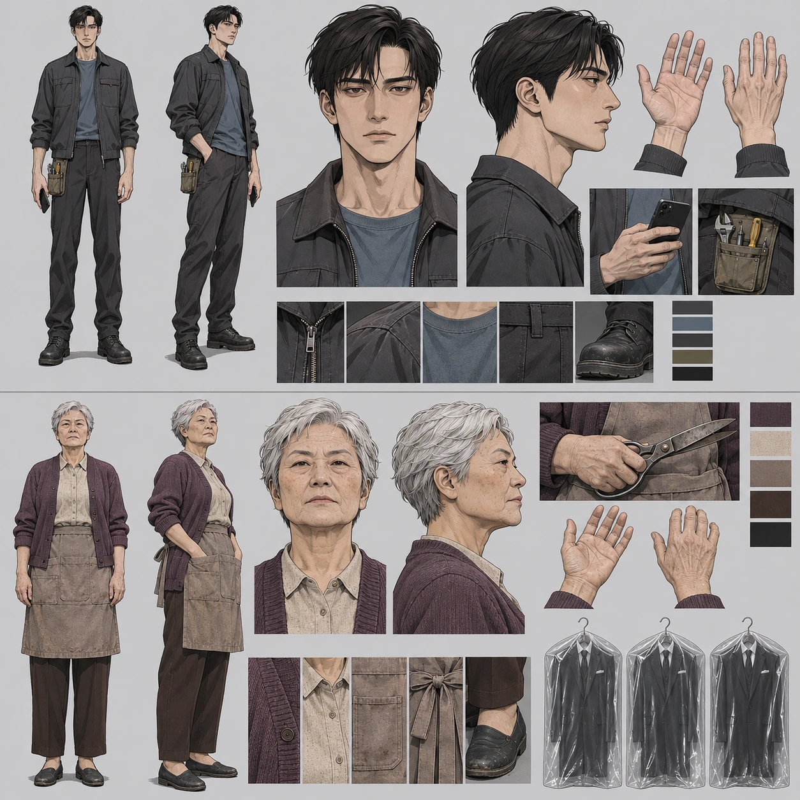
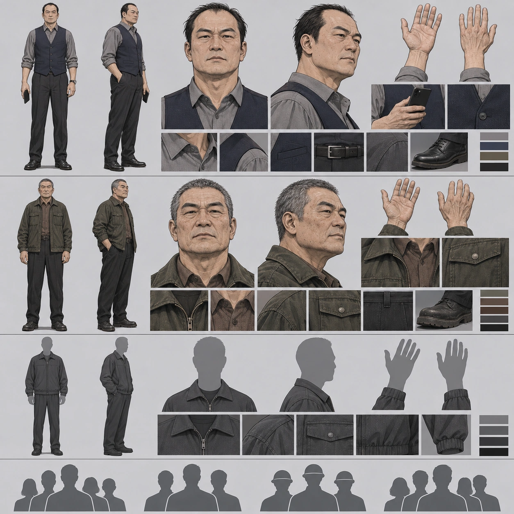
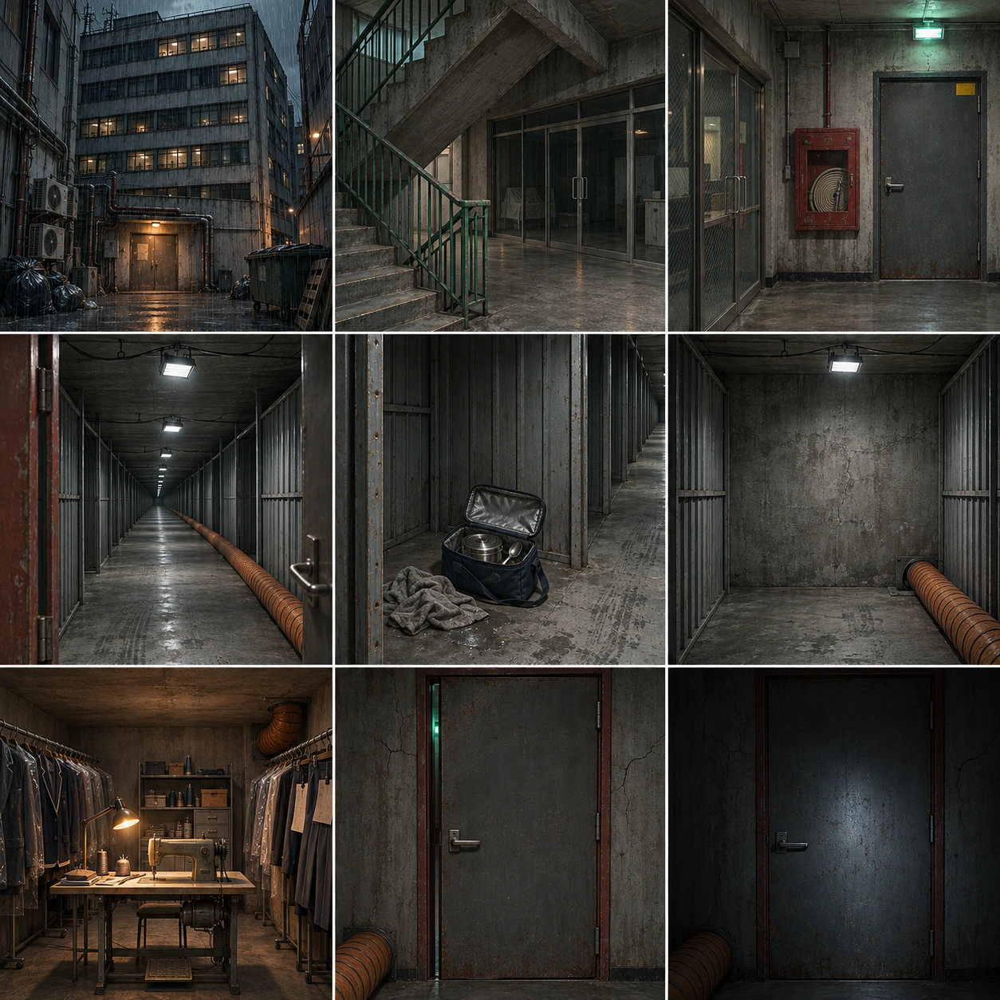

원문 분석 및 삽화 제작 설정입니다. 1화 전체 내용이 포함됩니다.
성인 비례, 절제된 잉크선, 디지털 셀 명암, 낮은 채도의 청회색·차콜·탁한 호박빛, 인물의 미세한 표정 중심



나이(박미숙 62세 제외), 키, 의상 색과 얼굴은 캐릭터 일관성을 위한 제작 선택이며 원문 사실로 주장하지 않는다.
현장 주인공
처리자로 시작해 책임을 감수하는 신고자로 변한다. 탈출할 기회에 박미숙 곁을 택한다.
{
"apparent_age": 32,
"height_cm": 178,
"face": "좁고 각진 타원 얼굴, 창백한 중성 피부, 피로한 짙은 갈색 눈, 곧은 눈썹과 코, 무수염·무안경",
"hair": "검정 짧은 옆가르마, 약간 흐트러진 앞머리",
"clothes": "차콜 작업 재킷, 바랜 슬레이트 블루 티셔츠, 짙은 회색 작업 바지, 검정 작업화",
"props": "검정 스마트폰, 오른쪽 허리의 작은 올리브 공구 파우치",
"hand": "왼손은 외형상 정상. 떨림·둔한 동작으로 표현하며 절단·의수·화상 흉터를 추가하지 않는다."
}수선방 발견 이후 현장 동행
무인으로 지워진 사람. 노동과 고객에 대한 책임을 포기하지 않으며 수동적 구조 대상이 아니다.
{
"height_cm": 158,
"face": "각지고 둥근 얼굴, 실제 62세의 주름, 작고 예리한 갈색 눈, 단단한 턱과 얇은 입술",
"hair": "짧은 흰회색 크롭",
"clothes": "바랜 자주색 카디건, 오트밀 블라우스, 짙은 갈색 바지, 검정 단화, 먼지 낀 토프색 작업 앞치마",
"props": "오래된 강철 재단 가위, 무채색 스마트폰, 구출 과정에서 투명 비닐 양복 커버 정확히 3개"
}전화 목소리만, 현장 등장 금지
원청의 기록을 현장 기사에게 강제하는 중간 배차 권력
{
"status": "외형은 원문 미정. 차후 등장 시만 쓰는 시트용 제작 가정",
"appearance": "50대 남성, 넓은 얼굴, 짧고 뒤로 밀린 검은 머리, 회색 셔츠와 네이비 조끼"
}사부의 가르침을 회상할 뿐 현재 현장 없음
열기보다 돌아오는 책임을 중시하는 윤리적 준거
{
"status": "외형은 원문 미정. 회상 시트용 제작 가정",
"appearance": "60대 남성, 다부진 체격, 짧은 소금후추 머리, 풍화된 넓은 얼굴, 어두운 올리브 작업 재킷과 갈색 이너"
}박미숙의 말 속 인물, 현재 등장 없음
{
"status": "성별·나이·외형을 원문이 정하지 않음. 얼굴 없는 중립 실루엣만 사용, 서사 이미지에 삽입하지 않는다."
}언급 집단, 개별 현장 인물 아님
{
"status": "얼굴·제복·구조 장면을 만들어 넣지 않는다. 시트의 군집 아이콘은 제작 문서에만 사용한다."
}원문 근거: 7층 상가, 비 오는 밤 22:56
낡은 한국 근린상가, 콘크리트 외장, 대부분 꺼진 창, 좁은 후면 골목과 철제 서비스 문, 낮은 차양. 실재 8층을 만들지 않는다.
조명: 젖은 청회색 외벽, 탁한 가로등 반사
원문 근거: 승강기 운행 종료, 2층 휴대폰 수리점, 3층 한복집, 이후 임대 문의
회색 콘크리트 계단·바닥, 녹색 금속 난간, 낡은 유리 상점 출입문, 형광빛 계단 등. 승강기 버튼은 7까지만.
조명: 차가운 저조도, 문 안쪽은 거의 어두움
원문 근거: 소화전 옆 회색 방화문·노란 스티커, 7층 복도 유리문
계단참에서 정면을 볼 때 중앙 오른쪽에 회색 방화문, 바로 왼쪽에 낡은 붉은 소화전함, 맞은편에 철망유리 복도문. 문틀 우상단 노란 사각 관리 스티커. 문 너머 주름 출구와 동일한 문.
조명: 평시 흐린 차가운 등, 바깥 비상등은 초록
원문 근거: 건물 폭 세 배, 창 없음, 철사에 매단 투광등, 주황 덕트, 양옆 철제 칸막이 창고
출입구에서 막다른 벽을 보는 방향 기준 주황색 주름관 덕트는 바닥 오른쪽 가장자리를 따라감. 양측 얇은 아연도금 철제 칸막이. 회색 콘크리트·천장 노출 배관, 직사각 공사용 투광등은 철사로 매달림. 일반 복도 형광등이나 창을 넣지 않음.
조명: 차가운 흰 투광등, 깊은 청록 그림자
원문 근거: 젖은 걸레·보온 도시락 가방·온기 있는 스테인리스 통·반쯤 남은 밥·뚜껑 위 숟가락
입구에서 왼쪽 세 번째 칸으로 고정. 바닥 흠집·테이프·뜯긴 상자, 회색 젖은 걸레, 네이비 보온 가방, 은색 직사각 통 하나·숟가락 하나. 따뜻함을 과도한 김으로 표현하지 않음.
조명: 복도 투광등의 측면광
원문 근거: 도면에도 벽, 덕트가 벽 전에 바닥으로 꺾여 사라짐
평평한 막힌 콘크리트 벽, 오른쪽 하단 바닥의 작은 결·주름, 덕트가 그곳으로 내려감. 정상적인 숨은 문·터널을 추가하지 않음.
조명: 마지막 천장 투광등의 차가운 빛
원문 근거: 바닥이 한 뼘 꺼졌다 돌아오고 다른 공간에 섬
기존 바닥 선과 원근만 미세하게 어긋남. 왼발 체중 이동, 숨과 신체 긴장이 주효과. 거대한 포털·마법진·번개·날개 금지.
조명: 출발·도착 공간의 조명만
원문 근거: 낮은 천장, 생활 스탠드, 벽 따라 행거 두 줄, 중앙 공업용 미싱 한 대, 천장 모서리 덕트 끝
제작상 약 4×5m, 창문 없음. 좌우 벽에 행거 한 줄씩, 가운데 미싱 테이블 한 대, 그 왼쪽 스탠드, 멀리 오른쪽 위에 주황 덕트 토출구. 회색 거친 벽. 비닐 양복·교복·핀 꽂힌 바지. 42벌 설정이나 전부 세어 보이게 하지 않음. 가위는 대화 후 미싱 테이블에 남음.
조명: 따뜻하고 약한 생활 스탠드, 폐쇄 통보 때 깜박임
원문 근거: 23:47, 문틀 붉게 달아오름, 콘크리트 실금, 바깥 초록 비상등
복도 안에서 바라본 동일 회색 방화문. 주황 덕트는 입구 방향으로 이어짐. 붉은 것은 문틀의 열이지 화재가 아님. 바깥은 좁은 틈으로만 보이고 두 사람은 끝내 안쪽에 남는다.
조명: 붉은 프레임 + 초록 틈 + 남은 흰 투광등
원문 근거: 문 닫힘, 마지막 투광등 소등, 환기 정지, 박미숙 폰 손전등, 재하 폰 통신 한 칸
동일 복도·문·덕트 유지. 닫힌 문틀은 빛나는 탈출구가 아니다. 박미숙 손전등만 흰 보조광, 재하 폰 화면광. 구조대·새 출구·괴물 없음. 세 커버는 곁에 모아 둔다.
조명: 전화 손전등의 제한된 원뿔광과 폰 반사광
9개 배치 × 9씬 = 81개 세부 장면. 생성 원본의 실제 해상도는 각 장면 기록에 저장합니다. 강제 확대하지 않습니다.